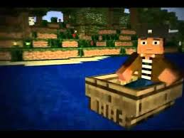
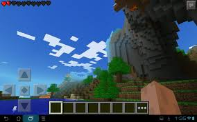
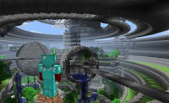

|
М А Й Н К Р А Ф Т |
|||||||
|
-------------------
ГОЛОВНА ІНФА ------------------- |
------------------------------------------------------------------------------------------------------------------------------------------------------- Tехніка безпеки ------------------------------------------------------------------------------------------------------------------------------------------------------- Ця стаття - про техніку безпеки в світі Minecraft . У ній описані поширені помилки початківців гравців . Hе копайте під / над собою Копаючи під собою , можна провалитися в печеру і розбитися / бути вбитим мобами ; впасти в підземне озеро з лавою ; докопатися до скарбниці , де буде відразу кілька мобів , які відразу Вас уб'ють. Якщо копати над собою , то Вас може затопити водою або лавою ; засипати гравієм або піском і Ви помрете від задухи ; на Вас може впасти моб (ті - ж самі монстри зі скарбниці ) . Якщо на Вас впаде кріпер , ви буквально приречені на моментальну смерть , кріпер впаде на Вас , і відразу вибухне. Якщо Ви , копаючи під себе , догодите в ту ж саму печеру , або , ще того гірше , скарбницю , де моби можуть вас розірвати на шматки в два рахунки. Не намагайтеся полювати на кріперa без зброї Якщо ви недосвідчений гравець , то бажано вступати з кріпер в рукопашну сутичку тільки при наявності належного зброї (наприклад , алмазного меча) . Бажано використовувати кам'яне і більш потужні мечі. Використання цибулі дуже сильно підвищить Ваші шанси на виживання. Починаючи з поновлення бета 1.8 , кріпер відносно легко вбиваються шляхом відкидання в спринті з кам'яним або більш потужним мечем. Просто переконайтеся, що навколо немає інших ворогів і є простір для відступу. Hе ночуйте під відкритим небом Гравці на мирній складності або на будь-якої складності , якщо використана команда / gamerule doMobSpawning хибним , в режимі творчість , досвідчені гравці або володіють як мінімум залізним мечем і повним комплектом залізної або алмазної броні , можуть дозволити собі таке небезпечна пригода . Всім іншим краще цього уникати. Бажано мати при собі повний комплект алмазної броні і алмазний меч. Не витрачайте їжу даремно Не треба їсти смажену свинину або хліб (або ще щось , що додає до шкалою голоду більше однієї іконки ) , якщо у вас відсутній всього половина іконки голоду. Цим ви тільки витратите їжу майже даремно. Краще з'їжте торт ( або печиво ) або почекайте , поки окуляри голоду не зменшаться . Використовувати торт в такий момент краще не треба , так як він розрахований на 6 разів. Hе здобувайте цінну руду без відповідної екіпіровки Якщо у вас кам'яна кирка і перед вами алмазна руда , краще поверніться додому (або переплавьте залізну руду прямо на місці) і скрафтіте залізні інструменти . Найцінніші руди (червона , смарагдова , золота і діамантова ) будуть просто знищені , якщо їх здобути не залізної або алмазної киркою . Якщо руда руйнується довше , ніж за 2 секунди , необхідно взяти більш просунуту кирку . Виняток - обсидіан , навіть алмазна кирка руйнує його за 9,4 секунди ( для видобутку обсидіану використовується тільки алмазна кирка ) . Не витрачайте інструменти з рідкісних матеріалів даремно Якщо вам потрібно копати гігантську шахту , а у вашому розпорядженні алмазна кирка і десяток кам'яних , використовуйте кам'яні . Час , витрачений на копання кам'яними кирками все одно менше того часу , який буде витрачено на пошуки алмазів для нової кирки . Кирки з цінних руд (золота , залізна , алмазна ) краще залишити на самий крайній випадок. Не зберігайте ТНТ і лаву , встановлюючи їх як блок Навіть якщо ви граєте на рівні складності Мирний , ні в якому разі не зберігайте ТНТ , поставивши його як блок куди-небудь . Один необережний рух знищить все, над чим ви працювали . Але , оскільки ТНТ вимагає підведеного до нього сигналу червоного пилу або вогню , його можна поставити туди , куди ви точно ніколи не будете підводити хоч що-небудь з червоного каменю або підпалювати . Крім того , можна з версії 12w34a поставити ТНТ в рамку , якщо Вам просто хочеться його показати . Лава може спалити горючі конструкції, її краще зберігати у відрі , в скрині або рамці. У відрі лаву тримати теж не особливо безпечно ( см. Не бігайте з відром лави в руці). Не грайте з вогнем Найпростіше правило: якщо ненавмисно запалити хоча б один блок , можна залишитися без будинку. При тому , швидкість поширення вогню по листю дерев дозволяє лісовим пожежам спустошувати цілі чанкі . Але після поновлення Бета 1.6 швидкість поширення вогню значно зменшилася , хоча вогонь все ще може знищити значну частину лісу. Щоб уникнути цього , будуйте будинки з негорючих матеріалів , до яких відносяться , наприклад , ( кругляк , камінь , кам'яні цеглини , звичайні цеглини , блоки з заліза , червоного каменю , лазуриту , вугілля , смарагду , золота і алмазів ) . Намагайтеся уникати битви з мобами Нижнього Світу без необхідності Гаст майже недосяжний для меча ( виняток - політ в Творчий ( в цьому режимі їх взагалі краще не чіпати ), використання вудки , Спаун в печері з низькою стелею , але це трапляється досить рідко) , підстрелити його теж нелегко , а його кулі завдають величезні руйнування . Спробуйте побудувати навколо порталу укриття з кругляка (або іншого матеріалу , який витримає атаку Гаста ) . Зомбі - свінолюді ж ходять великими групами , і в разі агресії в бік одного з представників виду на допомогу кидаються всі зомбі - свінолюді в радіусі 32 блоків. Зомбі - свінолюді пасивні, поки їх не атакувати. Просто не чіпайте їх , поки Вам не знадобиться гнила плоть або золоті самородки , золоті самородки ж можна добути із золотих злитків , просто поклавши їх у сітку крафта . Скелет - іссушітель завдає дуже неприємний ефект ( иссушение ), та й взагалі досить сильний. Будуйте будинки з стійких до вибуху і вогню матеріалів Тільки новачок буде будувати будинок із землі , скла або піску. Один вибух кріпера або ТНТ - і Ви можете попрощатися зі своїм будинком. Та й до гріферству такий будинок набагато менш стійкий, ніж , наприклад , з кругляка . Булижник - досить поширений блок , з нього цілком можна будувати будинок. А якщо його переплавити в камінь і зробити кам'яний цегла , то будинок буде ще й красиво виглядати . Також не рекомендується будувати будинки з дощок , вовни і будь-яких інших горючих матеріалів , так як кресало / лава можуть запросто спалити будинки з горючих матеріалів . Використовуйте проти мобів тільки призначене для цього зброю Завжди використовуйте зброя: меч , лук , кресало , ТНТ , вогненна куля , відро лави ( та й то останні чотири досить небезпечні і для самого гравця - йому може бути завдано шкоди від вибуху або початися пожежа) . Інші інструменти , може , і завдадуть шкоди в рукопашній , але їх утрату не на багато перевищує шкоди від кулаків , а зношуються вони набагато швидше. До того ж меч з поновлення Бета 1.8 дозволяє блокувати атаку. Але при правильно обраній тактиці мобу можна вбити руками , правда , для цього потрібно грамотна оцінка обстановки і наявність вільного місця. Так само , намагатися вбити кулаками скелета дуже небезпечно і ймовірність смерті дуже висока. Але якщо ви пішли за деревом , а в цей час настала ніч або з печери вилізло кілька мобів , з невеликою ймовірністю їх можна перемогти. Просто залезьте у воду і бийте їх. (Примітка : проти скелета така тактика не підходить). Детальніше у статті Тактика ведення бою проти мобів . Не підриває ТНТ занадто близько до себе Якщо можливо , підведіть провід і висадіть з укриття. Якщо в розпорядженні тільки кресало , використовуйте на заряді праву кнопку миші і біжіть або побудуйте стіну ( стіна 4х4 товщиною в блок з будь-якого матеріалу зменшить втрату від вибуху до половини сердечка) . Та й взагалі ТНТ краще підривати у вільній місцевості. Не забувайте прибирати цінні предмети в скриню У зв'язку з тим , що починаючи з 1.8 підземелля стали більш великими і більш небезпечними , рекомендується прибирати все цінне в скриню при поході туди , а також робити невеликі " заначки " у процесі , якщо підземеллі виявилося дуже великим і заплутаним. Пам'ятайте: від випадкової смерті не застрахований жоден гравець. А ще бажано робити покажчики або мітки , оскільки можна набрати дуже багато речей і заблукати. Звичайно , можна зробити барикаду , тільки можна померти від голоду. Також можна вибратися з печери пробравши вгору по діагоналі або поставивши блоки під собою , але можна опинитися в абсолютно незнайомому місці. Але якщо є компас , завжди можна вийти . І невеликі рекомендації . Візьміть з собою в печеру стопку смаженої свинини або яловичини ( курятина небажана, оскільки вона поповнює менше очок голоду) . Так само беріть з собою в печеру вудку і відро води. Якщо правильно вилити воду і грамотно оцінити траєкторію закидання вудки , можна зловити рибу. Якщо Вам попалася дуже велика печера , то робіть рукотворні стіни з кругляка , землі , гравію та інших підручних матеріалів там , де Ви все обійшли і зібрали . Якщо Ви знайшли такі цінності як червоний пил , смарагди , золото , багато заліза і алмази , рекомендуємо повернуться додому і покласти це все в скриню. Позначайте свій шлях У підземеллях або в лісі зовсім неважко заблукати. Тому намагайтеся залишати мітки з рукотворних блоків , запам'ятовуйте орієнтири , також добре допомагає доріжка ізкрасного пилу , ведуча у вхід у житло ( по ній неможливо заблукати ) . Докладніше - дивіться Орієнтування на місцевості. Не носіть багато інструментів Ця рада може здатися дивним. Але все дуже просто: верстак , 128 ( 2 * 64 ) палиць і 192 ( 3 * 64 ) одиниць матеріалу , з якого будуть зроблені ваші кирки займатимуть набагато менше ( приблизно в 10 разів) місця, ніж 64 кирки , скрафчение дому та принесені в шахту (6 місць в інвентарі проти 64). Hе ставте камін в дерев'яному будинку Так , камін красиво виглядає , особливо в поєднанні з дерев'яним паркетом або килимом з кольорової вовни. Але ще красивіше виглядає ваш палаючий будинок з горючих матеріалів! Тому перш , ніж запускати камін , переконайтеся , що на відстані як мінімум 2 блоку немає нічого з горючих матеріалів . З попередньою версією 13w16a (1.6 ) у грі з'явилися килими з вовни , які не горять . Не залишайте діри в стінах житла Будинок зроблений для того , щоб захищати гравця від решти світу , а через дірки легко можуть пролізти моби , що робить будинок безглуздим. Для вікон використовуйте скло або скляні панелі , для бійниць підійдуть ворота . Кращий варіант - будинок на висоті (не на горі , а на стовпі ) . Гарантія , що туди ніхто не забереться . Не ставте ліжко впритул до стіни Через бага або задумки Нотчa , коли ви спите до вас може переміщуватися моб , що стоїть на відстані однієї клітини від вас (навіть якщо між вами стіна). Рішень декілька: ставити ліжко на другому поверсі / в підвалі , зробити стіни товщиною у два блоки , ставити ліжко на відстані 1 блоку від стіни. Не вбивайте свиней / корів / курок мечем , чи не зачарованим на Аспект вогню , якщо у вас є кресало / відро з лавою / меч , зачарований на Аспект вогню / лук , зачарований на Займання Якщо ви взяли з собою на полювання за свинями / коровами / курками кресало / відро з лавою , то спаліть свиню / корову / курку , клацнувши правою кнопкою миші на блок , на якому стоїть потрібний моб . Так Ви економите час і вугілля на готування (так як зі свині / корови / курки , якщо вона померла палаючої , м'ясо випадає вже смажене ) , а так само не витрачаєте даремно міцність свого меча . Тільки стежте за водоймами (вода гасить мобів ) і палаючими предметами (див. розділ "Не грайте з вогнем " ) , а також не використовуйте в дощ (дощ гасить вогонь і палаючих мобів ) . Не годуйте вовків чим-небудь , крім свинини або гнилої плоті В принципі , Ви можете годувати вовків чим завгодно , але це буде безглуздо , так як тільки свинина і плоть можуть відновити здоров'я вовку . А гнила плоть , введена в 1,8 , непридатна для гравця з причини нетравлення , але чудово відновлює здоров'я вовків. І ще: не годуйте вовків , якщо у них хвіст під прямим кутом до ніг . Це означає , що у них майже повне здоров'я . Не робіть занадто багато дощок і палиць Пам'ятайте , що деревина - це " стислі " дошки. І якщо у Вас буде занадто багато дощок і палиць , то вони заб'ють весь інвентар. А , починаючи з поновлення бета 1.2 , деревину можна обпалити в печі і отримати деревне вугілля. Hе бігайте з відром лави в руці Всього один випадковий клік правою кнопкою миші може стати причиною Вашої смерті з втратою вмісту інвентарю . Оточуйте камін негорючими блоками Якщо у вас дерев'яний будинок і ви забули поміняти стіни , підлога і стеля , можете розпрощатися зі своїм будинком. Однак у версії 1.6 був доданий килимок з шерсті , який не горить . Тому підлога можна закрити килимами. Не здійснюйте самогубство в хардкор Це призведе до блокування і видаленню світу або перманентної ( довічної ) блокуванню на сервері. Намагайтеся ставити будинок на / біля місця Спаунa У випадку вашої смерті ви мало того що втратите всі свої предмети з інвентарю (якщо чанкі з лежачими речами були завантажені і ви не зумієте до них повернутися протягом 5 хвилин) , так ще й ризикуєте втратити своє житло , якщо воно розташоване далеко від місця Спаун . Але якщо вже ви побудували житло досить далеко від Спаун , то спробуйте зробити наступне:
Намагайтеся менше перебувати на одному і тому ж місці Постійне знаходження на одному і тому ж місці приводить до поліпшення екіпіровки ворожих мобів та модифікації їх штучного інтелекту. Іншими словами , якщо Ви довго будете перебувати в одному і тому ж місці , ворожі моби стануть розумнішими і будуть сильніше екіпіровані . Якщо ж Ви будете довго перебувати в селі, зомбі можуть заразити всіх жителів і потім напасти на Вас . Також при вбивстві цієї армії зомбі почнуть Спауна нові , що ще більше ускладнить проблему. Не заходьте у невідомі вам портали Заходячи в незнайомі портали на сервері є ризик що ці портали або забудовані блоками , або залиті лавою , в першому випадку (якщо портал запрівачен ) ви не телепортіруетесь і застряєте в пеклі. Ось порада на перший випадок , бігайте , втрачайте голод , що б померти і повернуться в нормальний світ , речі ви не повернете , але продовжите виживання на сервері. Писати в чат марно, як відомо , повідомлення видно тільки в тому світі в якому знаходиться відправник , так як портал - це межа між двома світами , відкрити менюшку чату там неможливо. Чит-коди Якщо Ви заблукали в пекельній фортеці чи Вас майже скинув в Порожнечу дракон Краї , а на Вас надіта алмазна броня і у Вас дуже цінні речі в інвентарі , то можна використовувати команду / gamerule keepInventory правда , і всі речі при смерті будуть зберігатися у гравця в його інвентарі. |
-------------------------
ЗМІСТ -------------------------
|
|||||